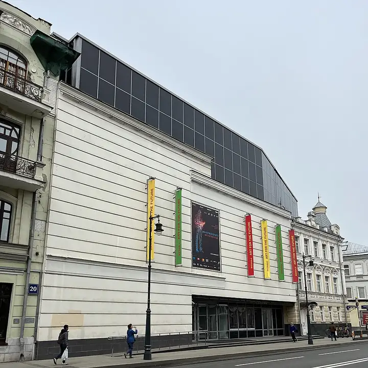

Подборку собрали 21 октября, прошедшие события скрыты. Свежая афиша — на главной

Фото: JukoFF, CC BY-SA 4.0 · Wikimedia Commons
Музей фотографии · ЦАО
Мультимедиа Арт Музей
Лучшие фотовыставки города сразу на нескольких этажах.
- ₽ · до 1 500 ₽ на человека
- в 1 плане
- 1 событие в афише
Позвать сюда: Мультимедиа Арт МузейОткрыть в каталоге: Мультимедиа Арт МузейМаршрут до места: Мультимедиа Арт Музей
Адрес и детали
- Адрес
- ул. Остоженка, 16
Открыть на Яндекс Картах (в новой вкладке) - Метро
- м. Кропоткинская
- Округ
- Центр (ЦАО)
- Цена
- до 1 500 ₽ на человека
- Часы работы
- вт–вс 12:00–21:00 · проверили в октябре 2026
- Телефон
- +7 (495) 637-11-00
Планы с этим местом 1
- Мультимедиа Арт Музей · Музей фотографии · м. Кропоткинская
- 13 минут пешкомПушкинский музей · Музей
- 7 минут пешкомНитка · Русская чайная
Фотовыставки на нескольких этажах МАММ, потом 13 минут пешком до слепков и итальянского дворика Пушкинского, а в конце — чай в русской чайной «Нитка».
Открыть план: Фото и классикаПозвать сюда: Фото и классика
Фото: JukoFF, CC BY-SA 4.0 · Wikimedia Commons

Афиша площадки 1
Мультимедиа Арт Музей (МАММ) · м. Кропоткинская · от 100 ₽ · 16+
Фотобиеннале занимает весь МАММ: Роджер Баллен, коллажи Родченко, история метро и многое другое. Билет от 100 ₽, по понедельникам закрыто.
Подробнее: Фотобиеннале-2026Позвать сюда: Фотобиеннале-2026Билеты : Фотобиеннале-2026 (страница с билетами, откроется в новой вкладке)
Фото: JukoFF, CC BY-SA 4.0 · Wikimedia Commons
Похожие рядом
Что ещё рядом
Как позвать
- Выбери план, место или событие — в карточке адрес, цены и маршрут в Яндекс Картах.
- Нажми «Позвать сюда» — соберётся приглашение-игра для свидания или голосование для компании.
- Отправь ссылку в любой мессенджер: тебе ответят, а компания отметит, куда и когда может. Бесплатно и без регистрации.